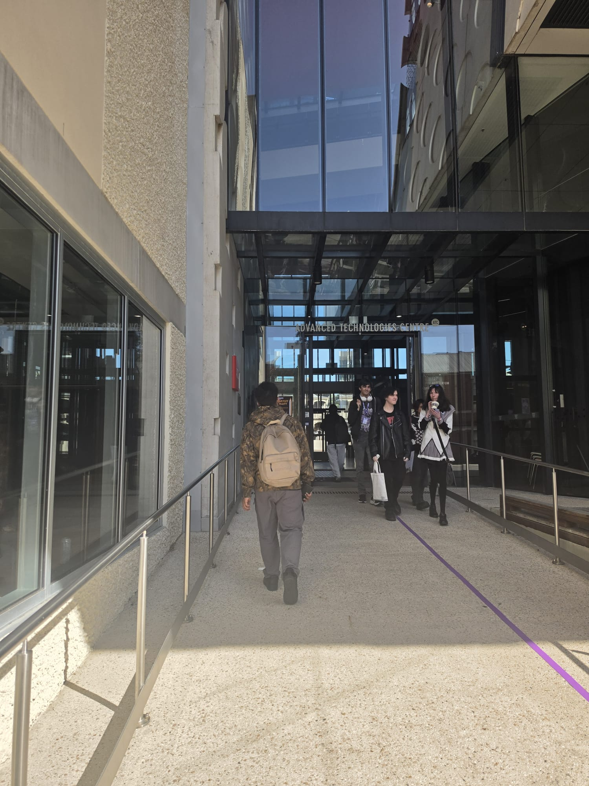

Welcome to My Swinburne Journey
Starting university is a massive milestone, and honestly, it felt a little overwhelming on day one. When I first walked up to the campus, seeing the massive glass structures made me realize I was officially a university student. My experience studying at Swinburne so far has been an incredible learning curve—balancing my classes, finding the right study rhythm, and learning how to navigate a bustling campus community.

3 Things I Wish I Knew Before Day One
- Locating the Right Classrooms Early: Buildings like the ATC look amazing, but finding your specific lab room inside a complex glass structure during peak hour can take longer than you think. Give yourself an extra ten minutes!
- The Pace of University Content: Unlike high school, university moves fast. Missing just one week of lecture material can leave you scrambling to catch up before assignment deadlines.
- Connecting with Classmates on Day One: Everyone walking through those campus doors is just as nervous as you are. Striking up a conversation with the person sitting next to you makes group projects a lot easier down the line.